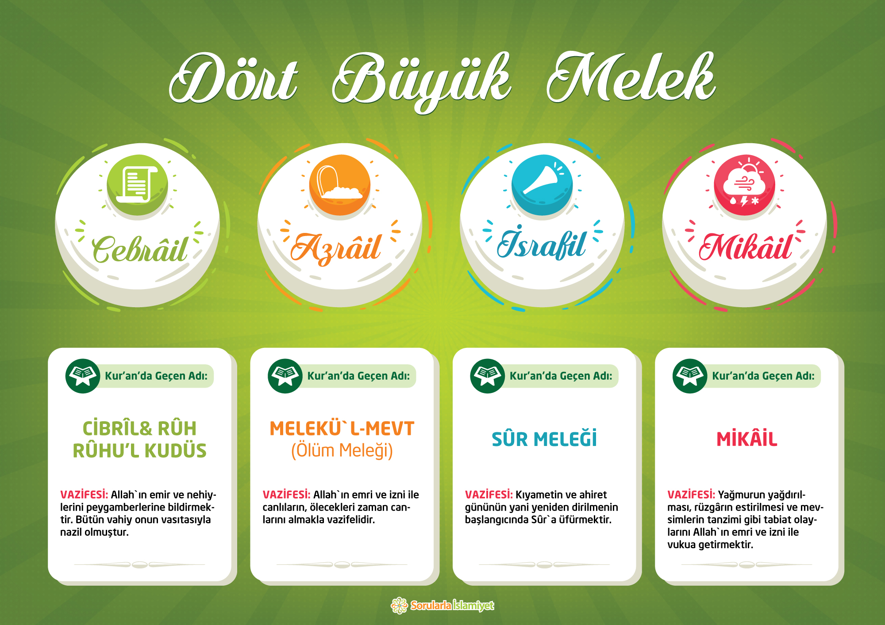

Büyük Melekler
My top level heading
My subheading
My sub-subheading

Değerli kardeşimiz,
Azrail (as) melaikelerin büyüklerindendir ve diğer melekler gibi mümin ruhlara karşı çok şefkatli, kafirlere karşı ise çok şiddetlidir.
"İyilerin ruhu hamurdan kıl çekmek gibi, kötülerin ruhu ise diken ağacından tülbent çekmek gibi çekilir."
- Birinci olayda ruh yara almaz.
- İkinci olayda ise, yara alır ve delik deşik olmuş bir hale gelir. Aldığı bu yaralar kabir hayatı boyunca da ona azap çektirirler.
- Ruhu çekilmekte olan bir adam duyduğu acıyı şöyle terif etmiştir:
- "Gökler üstüme çökmüştür. Vücudum iğne deliğinden geçiyor gibidir."
Daha fazlası için tıkla...